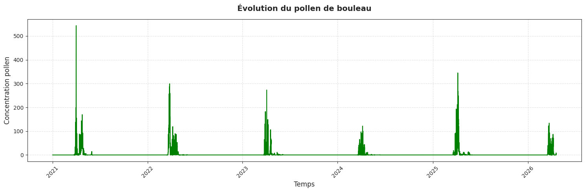
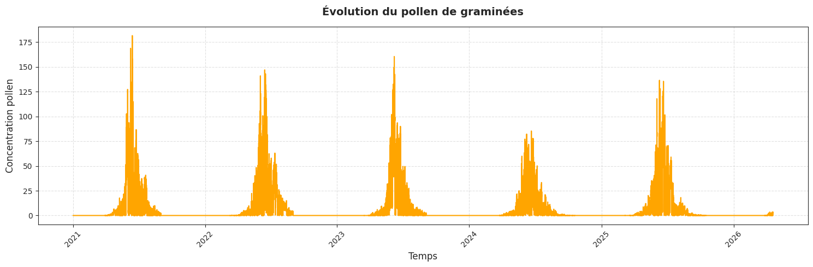
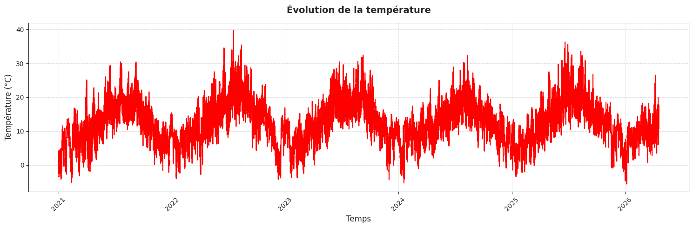
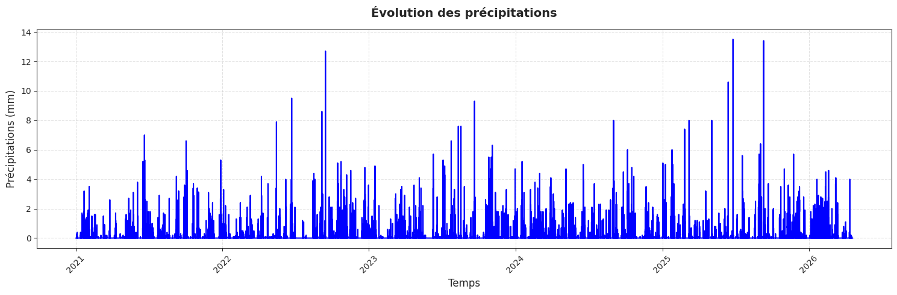
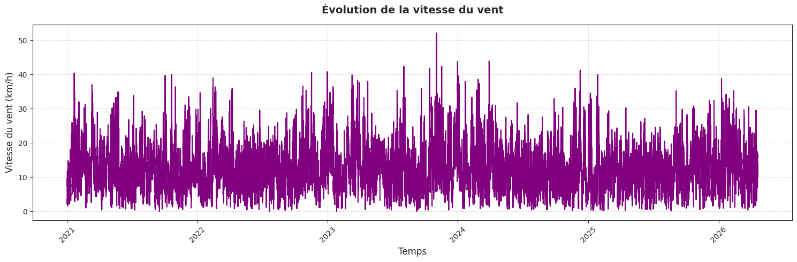
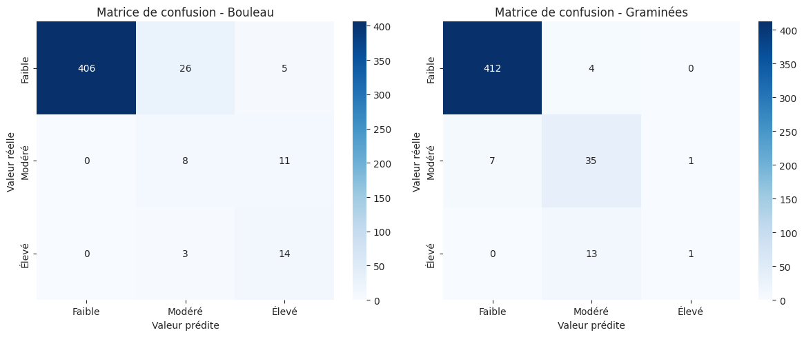
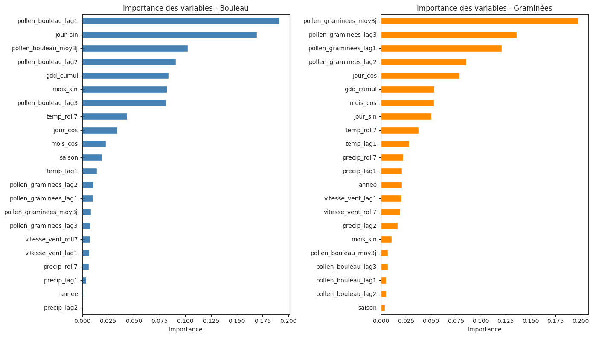
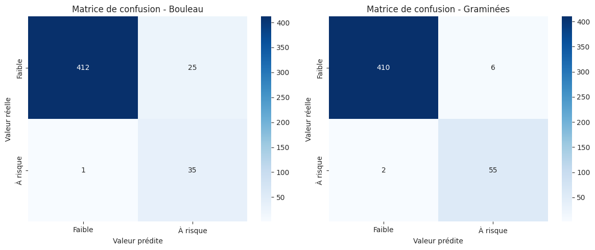
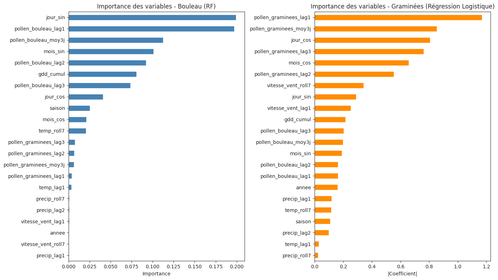

import os
import pandas as pd
import numpy as np
import s3fs
from utils import charger_donnees_api, imputer_na_par_valeur, tracer_series_temporelles, sauvegarder_donnees_clean, classifier_risque, predire_risque
from sklearn.pipeline import Pipeline
from sklearn.preprocessing import StandardScaler
from sklearn.linear_model import LogisticRegression
from sklearn.tree import DecisionTreeClassifier
from sklearn.ensemble import RandomForestClassifier
from sklearn.model_selection import GridSearchCV, TimeSeriesSplit
from sklearn.metrics import classification_report, confusion_matrix, f1_score
import seaborn as sns
import matplotlib.pyplot as plt
import joblib
from xgboost import XGBClassifier
<div style="width: 10px; height: 10px; border-radius: 50%; background: #97C459; margin-top: 8px;"></div>
<div style="width: 14px; height: 14px; border-radius: 50%; background: #C0DD97; margin-top: 5px;"></div>
<div style="width: 18px; height: 18px; border-radius: 50%; background: #639922; margin-top: 3px;"></div>
<div style="width: 14px; height: 14px; border-radius: 50%; background: #C0DD97; margin-top: 5px;"></div>
<div style="width: 10px; height: 10px; border-radius: 50%; background: #97C459; margin-top: 8px;"></div>PollenGuard
Modélisation et Prédiction du Risque Allergique Pollinique à Rennes
<span style="font-size: 13px; color: #C0DD97; font-weight: 500;">
Projet final — Python pour la Data Science
</span><div style="background: rgba(0,0,0,0.5); border: 0.5px solid rgba(192,221,151,0.4); border-radius: 10px; padding: 1rem;">
<p style="font-size: 11px; color: #97C459; margin: 0 0 6px;">ÉTUDIANTES</p>
<p style="font-size: 14px; font-weight: 500; color: #ffffff; margin: 0;">Prénom1 NOM1</p>
<p style="font-size: 14px; font-weight: 500; color: #ffffff; margin: 4px 0 0;">Prénom2 NOM2</p>
</div>
<div style="background: rgba(0,0,0,0.5); border: 0.5px solid rgba(192,221,151,0.4); border-radius: 10px; padding: 1rem;">
<p style="font-size: 11px; color: #97C459; margin: 0 0 6px;">ENCADRANTS</p>
<p style="font-size: 14px; font-weight: 500; color: #ffffff; margin: 0;">Julien Pramil</p>
<p style="font-size: 14px; color: rgba(255,255,255,0.7); margin: 4px 0 0;">Lino Galiana</p>
</div>Année 2024–2025 | Avril 2026 | Rennes, France
1. Importation de packages
2. Importation des donnees
On définit le dossier de données qui n’est créé que s’il n’existe pas encore dans le repertoire de travail.
DOSSIER_DONNEES = "data/raw"
os.makedirs(DOSSIER_DONNEES, exist_ok=True)Nous importons ici les données sur les pollens via l’api open-meteo (air-quality pour les données sur les pollens et archives pour les données météo); nous avons considéré les données sur un an du 1er janvier 2023 au 01 janvier 2024 pour Rennes.
Données Pollen
url_pollen = "https://air-quality-api.open-meteo.com/v1/air-quality"
params_pollen = {
"latitude": 48.11,
"longitude": -1.67,
"hourly": ["birch_pollen", "grass_pollen"],
"start_date": "2021-01-01",
"end_date": "2026-04-19"
}
fichier_pollen = os.path.join(DOSSIER_DONNEES, "pollen.csv")
df_pol = charger_donnees_api(
url=url_pollen,
params=params_pollen,
fichier_cache=fichier_pollen,
force_reload= False
)Données météo
url_meteo = "https://archive-api.open-meteo.com/v1/archive"
params_meteo = {
"latitude": 48.11,
"longitude": -1.67,
"hourly": ["temperature_2m", "precipitation", "wind_speed_10m"],
"start_date": "2021-01-01",
"end_date": "2026-04-19",
"timezone": "Europe/Paris"
}
fichier_meteo = os.path.join(DOSSIER_DONNEES, "meteo.csv")
df_met = charger_donnees_api(
url=url_meteo,
params=params_meteo,
fichier_cache=fichier_meteo,
force_reload= False
)EN SAVOIR PLUS — REVUE DE LITTERATURE
3. Revue de littérature
3.1 Pollen, phénologie et santé publique
Le pollen constitue l’un des principaux aeroallergènes atmosphériques en Europe tempérée, avec des impacts significatifs sur la santé respiratoire. En France, les pollens de bouleau (Betula) et de graminées (Poaceae) représentent deux des taxons les plus allergisants, responsables de pics saisonniers d’asthme et de rhinites allergiques [Roussel, 2023]. Le bouleau présente une fenêtre pollinique étroite (mars-avril), tandis que les graminées ont une saison plus étalée (mai-septembre), créant des profils de risque distincts [Atmo France, 2025].
La littérature souligne la forte saisonnalité de ces émissions, avec des cycles phénologiques relativement stables d’une année sur l’autre, bien que l’intensité des pics varie selon les conditions hivernales et printanières [Galán et al., 2016]. Cette régularité saisonnière justifie l’usage de variables calendaires (jour de l’année, encodage cyclique) comme prédicteurs premiers, car elles capturent la position dans le cycle biologique annuel du développement végétal.
Les seuils de risque allergique sont généralement définis en grains/m³ (faible < 30, modéré 30-100, élevé > 100), mais leur définition reste conventionnelle et sensible au contexte local [D’Amato et al., 2016]. Dans un objectif de santé publique, la littérature récente privilégie souvent une reformulation binaire “faible / à risque” pour simplifier les alertes destinées au grand public [Celenk & Bicakci, 2015].
3.2 Facteurs météorologiques et mécanismes biophysiques
Les conditions météorologiques modulent à la fois la libération, la dispersion et la persistance du pollen dans l’atmosphère [Sofiev & Bergmann, 2020].
Température : facteur déclencheur principal de la floraison via l’accumulation thermique (degrés-jours, GDD). Une douceur printanière prolongée accélère la débourrement et la libération pollinique [Oteros et al., 2017].
Précipitations : effet de “lessivage” rapide des particules en suspension. Une pluie significative réduit les concentrations dans les 24-48h suivantes [Roussel, 2023].
Vent : rôle ambivalent selon l’intensité. Un vent modéré favorise la dispersion anémophile (graminées), tandis qu’un vent fort dilue les concentrations locales [Grewling et al., 2019].
Ces effets ne sont pas instantanés : la littérature montre des lags temporels pertinents (J-1 à J-7) et des agrégats glissants (moyennes ou sommes sur 3-14 jours) pour capturer les dynamiques retardées [Mandrioli et al., 1998]. Pour la prévision à J+1, les variables météo contemporaines et retardées constituent ainsi le socle explicatif standard.
3.3 Méthodes statistiques et machine learning pour la prévision pollinique
Les approches traditionnelles reposent sur des modèles phénologiques paramétriques (déclenchement de floraison par GDD) ou des régressions linéaires/GLM [Hirst, 1952]. Depuis les années 2010, le machine learning domine, notamment pour capturer les non-linéarités et interactions complexes [Sofiev et al., 2013].
Modèles à base d’arbres Les forêts aléatoires (Random Forest) et les algorithmes de boosting (XGBoost, LightGBM) sont particulièrement adaptés aux données tabulaires météo + saison, avec une bonne robustesse au déséquilibre et une interprétabilité via l’importance des variables [Fernández-Rodríguez et al., 2020]. Ces méthodes surpassent régulièrement les GLM sur les prévisions à court terme (J+1 à J+3) [Puc et al., 2021].
Validation temporelle La littérature insiste sur l’usage de TimeSeriesSplit ou de splits chronologiques stricts pour éviter les fuites temporelles, car les corrélations auto-régressives (lags pollen) rendent les validations classiques (k-fold aléatoire) optimistes [Hyndman & Athanasopoulos, 2018].
Métriques adaptées Face au déséquilibre structurel (70-90% de zéros), l’accuracy est abandonnée au profit du F1-macro, du rappel sur les classes rares ou de l’AUC-PR [Davis & Goadrich, 2006]. La reformulation binaire “présent / absent” est fréquente pour améliorer la détectabilité des pics [Celenk & Bicakci, 2015].
3.4 Déploiement opérationnel et limites
Les systèmes nationaux (Atmo France, RNSA) combinent modèles phénologiques, données de terrain et prévisions météo pour des bulletins à J, J+1, J+3 [Air Breizh, 2025]. L’automatisation via API météo (Open-Meteo) et pipelines ML est une évolution récente pour des prévisions locales [Sofiev & Bergmann, 2020].
Limites récurrentes identifiées :
Dépendance aux données historiques : les lags pollen améliorent les performances (+5-15%) mais limitent l’usage “from scratch” [Oteros et al., 2017].
Généralisation spatiale : les modèles locaux peinent à se transférer sans recalibrage [Grewling et al., 2019].
Interprétabilité : les arbres “black-box” nécessitent des analyses d’importance pour valider les mécanismes biophysiques [Lundberg et al., 2017].
Positionnement du projet
Ce travail s’inscrit dans cette littérature en testant systématiquement Random Forest vs XGBoost vs logistique sur données météo + lags, avec validation temporelle stricte et F1-macro comme métrique principale. L’innovation réside dans l’évaluation comparative météo seule vs météo + historique pollen, ainsi que dans le pipeline opérationnel (API Open-Meteo, Streamlit), directement applicable à Rennes dans un contexte de santé publique locale.
4. Fusion et analyse exploratoire
Pour éviter de travailler sur les bases originales, on va travailler sur les copies de ces bases.
df_meteo = df_met.copy()
df_pollen = df_pol.copy()4.1. Fusion des bases
Pour répondre à la thématique, nous devons fusionner les deux bases; Mais avant toute fusion, il faut vérifier la structure des deux bases et surtout explorer la clé de fusion qui ici est la date. Ci-dessous, un aperçu des deux bases:
pd.concat(
[df_pollen.head(), df_meteo.head()],
axis=1,
keys=["Pollen", "Meteo"]
)| Pollen | Meteo | ||||||
|---|---|---|---|---|---|---|---|
| date | birch_pollen | grass_pollen | date | temperature_2m | precipitation | wind_speed_10m | |
| 0 | 2021-01-01 00:00:00 | 0.0 | 0.0 | 2021-01-01 00:00:00 | -0.4 | 0.0 | 2.9 |
| 1 | 2021-01-01 01:00:00 | 0.0 | 0.0 | 2021-01-01 01:00:00 | -1.4 | 0.0 | 2.1 |
| 2 | 2021-01-01 02:00:00 | 0.0 | 0.0 | 2021-01-01 02:00:00 | -1.9 | 0.0 | 3.6 |
| 3 | 2021-01-01 03:00:00 | 0.0 | 0.0 | 2021-01-01 03:00:00 | -2.5 | 0.0 | 2.3 |
| 4 | 2021-01-01 04:00:00 | 0.0 | 0.0 | 2021-01-01 04:00:00 | -2.5 | 0.0 | 4.3 |
Pour faciliter la lisibilité et la manipulation des variables, il est nécessaire de les renommer.
df_pollen = df_pollen.rename(columns={
"birch_pollen": "pollen_bouleau",
"grass_pollen": "pollen_graminees"
})
df_meteo = df_meteo.rename(columns={
"temperature_2m": "temperature",
"precipitation": "precipitations",
"wind_speed_10m": "vitesse_vent"
})
pd.concat(
[df_pollen.head(), df_meteo.head()],
axis=1,
keys=["Pollen", "Meteo"]
)| Pollen | Meteo | ||||||
|---|---|---|---|---|---|---|---|
| date | pollen_bouleau | pollen_graminees | date | temperature | precipitations | vitesse_vent | |
| 0 | 2021-01-01 00:00:00 | 0.0 | 0.0 | 2021-01-01 00:00:00 | -0.4 | 0.0 | 2.9 |
| 1 | 2021-01-01 01:00:00 | 0.0 | 0.0 | 2021-01-01 01:00:00 | -1.4 | 0.0 | 2.1 |
| 2 | 2021-01-01 02:00:00 | 0.0 | 0.0 | 2021-01-01 02:00:00 | -1.9 | 0.0 | 3.6 |
| 3 | 2021-01-01 03:00:00 | 0.0 | 0.0 | 2021-01-01 03:00:00 | -2.5 | 0.0 | 2.3 |
| 4 | 2021-01-01 04:00:00 | 0.0 | 0.0 | 2021-01-01 04:00:00 | -2.5 | 0.0 | 4.3 |
Afin de garantir l’intégrité de nos deux bases qui sont temporelles, nous vérifions la régularité du pas de temps via le calcul des différences successives (.diff()). Cette étape confirme la continuité des observations horaires et l’absence de dates manquantes.
pd.concat(
[df_pollen["date"].diff().value_counts().head(), df_meteo["date"].diff().value_counts().head()],
axis=1,
keys=["Pollen", "Meteo"]
)| Pollen | Meteo | |
|---|---|---|
| date | ||
| 0 days 01:00:00 | 46439 | 46439 |
Vérifions que les périodes se chevauchent pour les deux bases. ça devrait être le cas au regard des paramètres d’importation mais la vérification en vaut la peine.
pd.DataFrame({
"Pollen": [df_pollen["date"].min(), df_pollen["date"].max()],
"Meteo": [df_meteo["date"].min(), df_meteo["date"].max()]
}, index=["Min date", "Max date"])| Pollen | Meteo | |
|---|---|---|
| Min date | 2021-01-01 00:00:00 | 2021-01-01 00:00:00 |
| Max date | 2026-04-19 23:00:00 | 2026-04-19 23:00:00 |
On remarque que les données des deux bases sont sans fuseau attachés, ce qui facilite la fusion locale en prenant la date comme clé de fusion.
print(df_meteo["date"].dt.tz)
print(df_pollen["date"].dt.tz)None
NoneOn se rend également compte qu’avant la fusion, il n y a pas de valeur manquante dans la base météo.
pd.concat(
[df_pollen.isnull().sum(), df_meteo.isnull().sum()],
axis=1,
keys=["Pollen", "Meteo"]
)| Pollen | Meteo | |
|---|---|---|
| date | 0.0 | 0.0 |
| pollen_bouleau | 12791.0 | NaN |
| pollen_graminees | 10559.0 | NaN |
| temperature | NaN | 0.0 |
| precipitations | NaN | 0.0 |
| vitesse_vent | NaN | 0.0 |
Fusion des deux bases Fusion des deux bases: avec toutes les vérifications qui viennent d’être faites sur la variable date qui est la clé primaire ici, on peut fusionner simplement avec un inner_join (correspondances exactes)
df_pollen_meteo = pd.merge(df_pollen, df_meteo, on="date", how="inner")
df_pollen_meteo.to_csv("data/raw/df_pollen_meteo_merge.csv")
print(df_pollen_meteo.shape)
df_pollen_meteo.head()(46440, 6)| date | pollen_bouleau | pollen_graminees | temperature | precipitations | vitesse_vent | |
|---|---|---|---|---|---|---|
| 0 | 2021-01-01 00:00:00 | 0.0 | 0.0 | -0.4 | 0.0 | 2.9 |
| 1 | 2021-01-01 01:00:00 | 0.0 | 0.0 | -1.4 | 0.0 | 2.1 |
| 2 | 2021-01-01 02:00:00 | 0.0 | 0.0 | -1.9 | 0.0 | 3.6 |
| 3 | 2021-01-01 03:00:00 | 0.0 | 0.0 | -2.5 | 0.0 | 2.3 |
| 4 | 2021-01-01 04:00:00 | 0.0 | 0.0 | -2.5 | 0.0 | 4.3 |
4.2. Exploration et traitement de la base d’étude
print("\n--- Informations détaillées (Check-up complet) ---")
df_pollen_meteo.info()
--- Informations détaillées (Check-up complet) ---
<class 'pandas.DataFrame'>
RangeIndex: 46440 entries, 0 to 46439
Data columns (total 6 columns):
# Column Non-Null Count Dtype
--- ------ -------------- -----
0 date 46440 non-null datetime64[us]
1 pollen_bouleau 33649 non-null float64
2 pollen_graminees 35881 non-null float64
3 temperature 46440 non-null float64
4 precipitations 46440 non-null float64
5 vitesse_vent 46440 non-null float64
dtypes: datetime64[us](1), float64(5)
memory usage: 2.1 MBdf_pollen_meteo.isnull().sum()date 0
pollen_bouleau 12791
pollen_graminees 10559
temperature 0
precipitations 0
vitesse_vent 0
dtype: int64Interprétation des valeurs manquantes
L’analyse des périodes manquantes montre qu’elles correspondent en réalité à des phases biologiques naturelles et non à des erreurs de collecte de données.
Pour le pollen de bouleau, les données sont absentes de janvier à fin février, ce qui correspond à une période de dormance. Elles sont présentes de mars à début août, période de pollinisation, puis redeviennent absentes à partir d’août jusqu’au 20 novembre, marquant la fin de la saison.
Pour les graminées, les données sont également absentes en hiver (janvier-février), présentes de mars à début septembre, ce qui reflète une saison de pollinisation plus longue, puis absentes à nouveau à partir de septembre jusqu’au 20 novembre.
Ces résultats sont cohérents avec les connaissances biologiques et confirment que les valeurs manquantes ne sont pas problématiques,mais traduisent simplement l’absence de pollen hors saison. Cela nous emmene donc à imputer ces valeurs manquantes par des 0.
from IPython.display import display, HTML
from utils import identifier_plages_manquantes
# Bouleau
display(HTML("<b>Périodes manquantes pour le Pollen de bouleau</b>"))
plages_bouleau = identifier_plages_manquantes(df_pollen_meteo, 'pollen_bouleau')
display(plages_bouleau)
# Graminées
display(HTML("<b>Périodes manquantes pour les graminées</b>"))
plages_graminees = identifier_plages_manquantes(df_pollen_meteo, 'pollen_graminees')
display(plages_graminees)
Périodes manquantes pour le Pollen de bouleau
--- Analyse : pollen_bouleau ---
Total NaN dans la colonne : 12791
Total identifié par blocs : 12791
Vérification : OK (Tous les NaN sont comptabilisés).| date_debut | date_fin | heures_manquantes | total_cumule_manquant | |
|---|---|---|---|---|
| 0 | 2021-08-01 00:00:00 | 2022-02-28 23:00:00 | 5088 | 5088 |
| 1 | 2022-08-01 00:00:00 | 2023-02-28 23:00:00 | 5088 | 10176 |
| 2 | 2023-08-04 01:00:00 | 2023-11-20 23:00:00 | 2615 | 12791 |
Périodes manquantes pour les graminées
--- Analyse : pollen_graminees ---
Total NaN dans la colonne : 10559
Total identifié par blocs : 10559
Vérification : OK (Tous les NaN sont comptabilisés).| date_debut | date_fin | heures_manquantes | total_cumule_manquant | |
|---|---|---|---|---|
| 0 | 2021-09-01 00:00:00 | 2022-02-28 23:00:00 | 4344 | 4344 |
| 1 | 2022-09-01 00:00:00 | 2023-02-28 23:00:00 | 4344 | 8688 |
| 2 | 2023-09-04 01:00:00 | 2023-11-20 23:00:00 | 1871 | 10559 |
Bien qu’après le 20 novembre 2023, les données ne soient pas manquantes pour ces deux variables de pollen, les valeurs qu’elles prennent sont nulles comme on peut le voir sur les graphiques plus bas; Ce même comportement est observé pour les mêmes périodes des années 2024 et 2025; ce qui est normal vu que la période novembre-decembre n’est pas leur saison.
# Définition de la borne temporelle (juste après le dernier NaN)
date_reprise = "2023-11-20 23:00:00"
# Création du sous-ensemble de données pour la fin d'année
df_fin_annee = df_pollen_meteo[df_pollen_meteo['date'] > date_reprise].copy()
# Calcul des statistiques pour se rassurer
stats_fin_annee = df_fin_annee[['pollen_bouleau', 'pollen_graminees']].agg(['max', 'min','mean', 'sum', 'count'])
print(f"--- Analyse de la période : du {df_fin_annee['date'].min()} au {df_fin_annee['date'].max()} ---")
print(f"Nombre total d'heures analysées : {len(df_fin_annee)}")
print("\nStatistiques des pollens sur cette période :")
display(stats_fin_annee)--- Analyse de la période : du 2023-11-21 00:00:00 au 2026-04-19 23:00:00 ---
Nombre total d'heures analysées : 21144
Statistiques des pollens sur cette période :| pollen_bouleau | pollen_graminees | |
|---|---|---|
| max | 344.90000 | 136.500000 |
| min | 0.00000 | 0.000000 |
| mean | 2.40472 | 4.525435 |
| sum | 50845.40000 | 95685.800000 |
| count | 21144.00000 | 21144.000000 |
Imputation des valeurs manquantes par 0
colonnes_pollen = ['pollen_bouleau', 'pollen_graminees']
df_pollen_meteo_clean = imputer_na_par_valeur(df_pollen_meteo, colonnes_pollen)
# 3. Vérification finale
print("Nombre de valeurs manquantes après imputation :")
print(df_pollen_meteo_clean[colonnes_pollen].isna().sum())Nombre de valeurs manquantes après imputation :
pollen_bouleau 0
pollen_graminees 0
dtype: int64sauvegarder_donnees_clean(
df=df_pollen_meteo_clean,
nom_fichier="df_pollen_meteo_clean.csv",
dossier="data/clean"
)Données sauvegardées dans : data/clean/df_pollen_meteo_clean.csvVariables polliniques — Bouleau & Graminées
Saisonnalité stricte et récurrente
Les deux espèces présentent une phénologie (cycles de vie selon le climat et la saison) remarquablement stable : le pic de bouleau se produit chaque année en mars–avril, immédiatement suivi du pic de graminées en mai–juillet. Cette régularité calendaire constitue un signal prédictif fort — la variable jour_de_l_année (avec un encodage sinusoïdal) sera vraisemblablement un prédicteur très discriminant du modèle.
Variabilité inter-annuelle marquée
L’intensité des pics fluctue fortement d’une année à l’autre, indépendamment de leur date d’occurrence. Le pic de bouleau de 2021 dépasse 500 grains/m³,tandis que celui de 2024 plafonne à ~150 grains/m³ — soit un facteur ×3. Cette variance inter-annuelle suggère que des conditions météorologiques spécifiques à chaque saison (températures hivernales, gel tardif, pluviométrie printanière) modulerait l’intensité de la saison pollinique. Le modèle devra capturer ces interactions.
Distribution fortement asymétrique (“zero-inflated”)
Les concentrations sont nulles ou quasi-nulles sur environ 75–80 % de l’année. La cible est donc déséquilibrée par construction : les pics sont rares, brefs et intenses. En classification, on devra éventuellement faire un rééquilibrage de classes (SMOTE ou class_weight='balanced') ;
Variables météorologiques
Température (signal principal)
La courbe sinusoïdale annuelle coïncide visuellement avec les fenêtres d’émission pollinique : les pics ne semblent se déclencher qu’au-dessus d’un seuil de douceur printanière.
Précipitations (effet “lavage atmosphérique”)
Les précipitations sont très sporadiques (distribution Poisson-like, avec des pics à 12–14 mm). Leur effet principal attendu est un lessivage rapide des particules en suspension : une pluie significative fait chuter par hypothèse les concentrations dans les 24–48 h. Ce mécanisme justifierait l’inclusion d’un lag de 1–2 jours sur les précipitations, en plus de la valeur courante.
Vitesse du vent (disperseur ambivalent)
Le signal est bruité et haute-fréquence (variabilité journalière importante à Rennes, site côtier). L’effet sur le pollen est non-linéaire : un vent modéré favoriserait la dispersion et augmente les concentrations locales, tandis qu’un vent fort tend à diluer et à déplacer les masses d’air. Une transformation (ex. log(vent + 1)) ou une discrétisation en classes (calme / modéré / fort) pourra être évaluée lors du feature engineering.
Synthèse — implications pour la modélisation
Les données seront agrégées pour avoir des données journalières afin garantir un minimum de stabilité.
| Observation | Action technique |
|---|---|
| Saisonnalité forte | Inclurejour_de_lannee comme features |
| Variabilité inter-annuelle | Ajouter lags météo (J-7, J-14) et rolling means |
| Distribution zero-inflated | Rééquilibrage + métrique adaptée (F1-macro, MAE) |
| Effet retardé pluie/vent | Features laggées à J-1 et J-2 |
| Non-linéarité vent | Transformation log ou discrétisation |
tracer_series_temporelles(
df=df_pollen_meteo_clean,
variables=[
"pollen_bouleau",
"pollen_graminees",
"temperature",
"precipitations",
"vitesse_vent"
],
titres={
"pollen_bouleau": "Évolution du pollen de bouleau",
"pollen_graminees": "Évolution du pollen de graminées",
"temperature": "Évolution de la température",
"precipitations": "Évolution des précipitations",
"vitesse_vent": "Évolution de la vitesse du vent"
},
ylabels={
"pollen_bouleau": "Concentration pollen",
"pollen_graminees": "Concentration pollen",
"temperature": "Température (°C)",
"precipitations": "Précipitations (mm)",
"vitesse_vent": "Vitesse du vent (km/h)"
},
couleurs={
"pollen_bouleau": "green",
"pollen_graminees": "orange",
"temperature": "red",
"precipitations": "blue",
"vitesse_vent": "purple"
}
)




Creation des données journalières
# Agrégation journalière
df_jour = df_pollen_meteo_clean.resample('D', on='date').agg(
pollen_bouleau=('pollen_bouleau', 'max'),
pollen_graminees=('pollen_graminees', 'max'),
temperature=('temperature', 'mean'),
precipitations=('precipitations', 'sum'),
vitesse_vent=('vitesse_vent', 'mean')
).reset_index()
sauvegarder_donnees_clean(
df=df_jour,
nom_fichier="df_pollen_meteo_jour.csv",
dossier="data/clean"
)
print(df_jour.shape)
df_jour.head()
Données sauvegardées dans : data/clean/df_pollen_meteo_jour.csv
(1935, 6)| date | pollen_bouleau | pollen_graminees | temperature | precipitations | vitesse_vent | |
|---|---|---|---|---|---|---|
| 0 | 2021-01-01 | 0.0 | 0.0 | -0.233333 | 0.0 | 7.483333 |
| 1 | 2021-01-02 | 0.0 | 0.0 | -0.258333 | 0.0 | 5.045833 |
| 2 | 2021-01-03 | 0.0 | 0.0 | 1.225000 | 1.7 | 7.883333 |
| 3 | 2021-01-04 | 0.0 | 0.0 | 1.129167 | 1.4 | 9.716667 |
| 4 | 2021-01-05 | 0.0 | 0.0 | 1.812500 | 0.1 | 10.504167 |
Sauvegarde dans S3 pour utilisation éventuelle
#fs = s3fs.S3FileSystem(
# client_kwargs={"endpoint_url": "https://minio.lab.sspcloud.fr"}
#)
#MY_BUCKET = "lesline"
#FILE_PATH_OUT_S3 = f"{MY_BUCKET}/diffusion/data_pollen_meteo_jour.csv"
#with fs.open(FILE_PATH_OUT_S3, "w") as f:
# df_jour.to_csv(f, index=False)
#fs.ls(f"{MY_BUCKET}/diffusion")4.3. Feature engeneering
Pour des raisons justifiées ci dessous, les variables à inclure dans notre modèle sont se présentent comme suit:
Température — le déclencheur principal
La floraison ne réagit pas à la température du jour même, mais à une accumulation de chaleur sur plusieurs jours. Les recherches en phénologie végétale montrent trois horizons pertinents :
| Feature | Fenêtre | Justification biologique |
|---|---|---|
| temp_lag1 | J-1 | Réaction immédiate de dispersion (un vent chaud peut entrainer la libération de pollen) |
| temp_roll7 | moy J-7→J-1 | une “Semaine douce” peut être un signal de floraison imminent |
| temp_roll14 | moy J-14→J-1 | Une accumulation thermique lente peut déclencher les premières fleurs |
Précipitations — l’effet lavage
La pluie agit très vite (24–48h) en lavant les particules de l’air. Au-delà de 3 jours, l’effet deviendrait négligeable.
| Feature | Fenêtre | Justification |
|---|---|---|
| precip_lag1 | J-1 | Effet du lavage immédiatement le lendemain |
| precip_lag2 | J-2 | Effet résiduel du lavage 48h après |
| precip_roll7 | somme J-7→J-1 | une période sèche prolongée entrainerait une accumulation de pollen |
Pour la pluie journalière, on prend une somme (cumul), pas une moyenne — ce qui compte, c’est la quantité totale tombée.
Vent — le transporteur
Le vent influence la concentration locale mais son effet est immédiat, pas cumulatif.
| Feature | Fenêtre | Justification |
|---|---|---|
| wind_lag1 | J-1 | Une dispersion la veille affecte ce qu’on mesure aujourd’hui |
| wind_roll7 | moy J-7→J-1 | Un vent fort le long de la semaine pourrait réduire la concentration de pollen dans un site côtier comme Rennes |
# ════════════════════════════════════════════════════════
# 1. FEATURES TEMPORELLES
# ════════════════════════════════════════════════════════
df_jour["jour_de_annee"] = df_jour["date"].dt.dayofyear
df_jour["mois"] = df_jour["date"].dt.month
df_jour["annee"] = df_jour["date"].dt.year
df_jour["saison"] = df_jour["mois"].map({
12:0, 1:0, 2:0,
3:1, 4:1, 5:1,
6:2, 7:2, 8:2,
9:3,10:3,11:3
})
# Encodage cyclique
df_jour["jour_sin"] = np.sin(2 * np.pi * df_jour["jour_de_annee"] / 365)
df_jour["jour_cos"] = np.cos(2 * np.pi * df_jour["jour_de_annee"] / 365)
df_jour["mois_sin"] = np.sin(2 * np.pi * df_jour["mois"] / 12)
df_jour["mois_cos"] = np.cos(2 * np.pi * df_jour["mois"] / 12)
# ════════════════════════════════════════════════════════
# 2. FEATURES MÉTÉO LAGGÉES ET GLISSANTES
# ════════════════════════════════════════════════════════
df_jour["temp_lag1"] = df_jour["temperature"].shift(1)
df_jour["temp_roll7"] = df_jour["temperature"].shift(1).rolling(7).mean()
df_jour["precip_lag1"] = df_jour["precipitations"].shift(1)
df_jour["precip_lag2"] = df_jour["precipitations"].shift(2)
df_jour["precip_roll7"] = df_jour["precipitations"].shift(1).rolling(7).sum()
df_jour["vitesse_vent_lag1"] = df_jour["vitesse_vent"].shift(1)
df_jour["vitesse_vent_roll7"] = df_jour["vitesse_vent"].shift(1).rolling(7).mean()
# ════════════════════════════════════════════════════════
# 3. DEGRÉS-JOURS CUMULÉS (GDD)
# ════════════════════════════════════════════════════════
df_jour["gdd_daily"] = (df_jour["temperature"] - 5).clip(lower=0)
df_jour["gdd_cumul"] = df_jour.groupby("annee")["gdd_daily"].cumsum()
# ════════════════════════════════════════════════════════
# 4. LAGS POLLEN (features)
# ════════════════════════════════════════════════════════
for col in ['pollen_bouleau', 'pollen_graminees']:
for lag in [1, 2, 3]:
df_jour[f'{col}_lag{lag}'] = df_jour[col].shift(lag)
df_jour[f'{col}_moy3j'] = df_jour[col].shift(1).rolling(3).mean()
# ════════════════════════════════════════════════════════
# 5. VARIABLE CIBLE
# ════════════════════════════════════════════════════════
df_jour['risque_bouleau_j1'] = df_jour['pollen_bouleau'].apply(classifier_risque).shift(-1)
df_jour['risque_graminees_j1'] = df_jour['pollen_graminees'].apply(classifier_risque).shift(-1)
# ════════════════════════════════════════════════════════
# 6. NETTOYAGE
# ════════════════════════════════════════════════════════
df_jour_modele = df_jour.dropna().reset_index(drop=True)
print(f"Shape final : {df_jour_modele.shape}")
print(f"\nDistribution - Bouleau :")
print(df_jour_modele['risque_bouleau_j1'].value_counts())
print(f"\nDistribution - Graminées :")
print(df_jour_modele['risque_graminees_j1'].value_counts())
Shape final : (1927, 33)
Distribution - Bouleau :
risque_bouleau_j1
0.0 1809
1.0 60
2.0 58
Name: count, dtype: int64
Distribution - Graminées :
risque_graminees_j1
0.0 1672
1.0 188
2.0 67
Name: count, dtype: int64# Sauvegarde optionnelle pour réutilisation
sauvegarder_donnees_clean(
df=df_jour_modele,
nom_fichier="df_jour_modele.csv",
dossier="data/clean"
)Données sauvegardées dans : data/clean/df_jour_modele.csvSauvegarde de données dans S3 pour l’utilisation dans streamlit
#fs = s3fs.S3FileSystem(
# client_kwargs={"endpoint_url": "https://minio.lab.sspcloud.fr"}
#)
#MY_BUCKET = "lesline"
#FILE_PATH_OUT_S3 = f"{MY_BUCKET}/diffusion/data_features_final_clean.csv"
#with fs.open(FILE_PATH_OUT_S3, "w") as f:
# df_jour_modele.to_csv(f, index=False)
#fs.ls(f"{MY_BUCKET}/diffusion")4.4 Définition des variables pour la modélisation
features = [
# Temporelles
'jour_sin', 'jour_cos', 'mois_sin', 'mois_cos', 'saison', 'annee',
# Température
'temp_lag1', 'temp_roll7', 'gdd_cumul',
# Précipitations
'precip_lag1', 'precip_lag2', 'precip_roll7',
# Vent
'vitesse_vent_lag1', 'vitesse_vent_roll7',
# Lags pollen
'pollen_bouleau_lag1', 'pollen_bouleau_lag2', 'pollen_bouleau_lag3',
'pollen_bouleau_moy3j',
'pollen_graminees_lag1', 'pollen_graminees_lag2', 'pollen_graminees_lag3',
'pollen_graminees_moy3j'
]
features_meteo = [
'jour_sin', 'jour_cos', 'mois_sin', 'mois_cos', 'saison', 'annee',
'temp_lag1', 'temp_roll7', 'gdd_cumul',
'precip_lag1', 'precip_lag2', 'precip_roll7',
'vitesse_vent_lag1', 'vitesse_vent_roll7'
]
print("Features complètes :", len(features))
print("Features météo :", len(features_meteo))Features complètes : 22
Features météo : 145. Modélisation
5.1 Préparation des données
5.1.1 Déséquilibre des classes
La distribution des classes révèle un fort déséquilibre, avec une très forte prédominance de la classe 0 (absence de pic ou de risque faible) pour les deux taxons. Afin de comprendre l’origine de ce déséquilibre et son impact potentiel sur le modèle, nous avons exploré deux contextes temporels distincts :
- un apprentissage sur toute l’année, incluant notamment les périodes hivernales où la concentration pollinique est naturellement très faible ou nulle ;
- un apprentissage restreint à la saison pollinique, c’est‑à‑dire les périodes où l’on attend a priori des épisodes à risque (par exemple, mars à juillet pour le bouleau et mai à septembre pour les graminées).
Les proportions observées sont les suivantes :
| Type | Toute l’année | Saison pollinique |
|---|---|---|
| Bouleau classe 0 | 94% | 87% |
| Graminées classe 0 | 87% | 66% |
Le filtrage sur la saison pollinique améliore légèrement l’équilibre pour les graminées, mais reste insuffisant pour le bouleau, où la classe 0 demeure très majoritaire. Étant donné que notre objectif est de développer un modèle exploitable sur l’ensemble de l’année, nous avons donc choisi de conserver toutes les données, afin de préserver la dynamique réelle de la présence pollinique au cours du cycle saisonnier.
Le déséquilibre est donc traité au niveau de l’apprentissage en utilisant class_weight='balanced', ce qui permet de diminuer l’influence de la classe majoritaire. Par ailleurs, nous privilégions des métriques adaptées comme le F1‑score macro plutôt que l’accuracy seule, afin de mieux apprécier la performance sur les classes minoritaires correspondant aux pics de risque.
print("Distribution - Bouleau :")
print(df_jour_modele['risque_bouleau_j1'].value_counts())
print("\nDistribution - Graminées :")
print(df_jour_modele['risque_graminees_j1'].value_counts())Distribution - Bouleau :
risque_bouleau_j1
0.0 1809
1.0 60
2.0 58
Name: count, dtype: int64
Distribution - Graminées :
risque_graminees_j1
0.0 1672
1.0 188
2.0 67
Name: count, dtype: int645.1.2 Split temporel train/test
Contrairement à un split aléatoire classique, nous respectons l’ordre chronologique des données, conformément aux bonnes pratiques pour les séries temporelles. Le modèle est entraîné sur la période 2021–2024 et évalué sur la période 2025–2026 (avril), de manière à simuler une utilisation prospective dans un contexte opérationnel de prévision pollinique.
train = df_jour_modele[df_jour_modele['date'].dt.year <= 2024]
test = df_jour_modele[df_jour_modele['date'].dt.year >= 2025]
X_train = train[features]
X_test = test[features]
y_train_bouleau = train['risque_bouleau_j1'].astype(int)
y_test_bouleau = test['risque_bouleau_j1'].astype(int)
y_train_graminees = train['risque_graminees_j1'].astype(int)
y_test_graminees = test['risque_graminees_j1'].astype(int)
print("Train :", X_train.shape)
print("Test :", X_test.shape)
print("\nAnnées train :", sorted(train['date'].dt.year.unique()))
print("Années test :", sorted(test['date'].dt.year.unique()))Train : (1454, 22)
Test : (473, 22)
Années train : [np.int32(2021), np.int32(2022), np.int32(2023), np.int32(2024)]
Années test : [np.int32(2025), np.int32(2026)]5.2 Modélisation
5.2.1 Pipeline preprocessing + modèles
Nous construisons un pipeline scikit‑learn qui intègre à la fois les étapes de preprocessing et les modèles, afin de garantir une application cohérente aux données d’entraînement et de test. Ce pipeline comprend :
- StandardScaler : standardisation des variables continues, nécessaire pour la régression logistique et souvent bénéfique pour d’autres modèles à base de distance.
- Quatre modèles : une régression logistique (baseline), un arbre de décision, un Random Forest et un XGBoost, permettant de comparer des méthodes simples, ensemblistes et boostées.
- GridSearchCV avec
TimeSeriesSplit: sélectionne les meilleurs hyperparamètres tout en respectant l’ordre chronologique des données. - F1‑macro comme métrique d’évaluation : adapté au déséquilibre des classes, il permet de mieux apprécier la performance sur les classes minoritaires qu’un simple score de précision.
Pipeline avec preprocessing et modèle
pipeline = Pipeline([
('scaler', StandardScaler()),
('modele', LogisticRegression())
])Grille de paramètres pour les 4 modèles
param_grid = [
{
'modele': [LogisticRegression(max_iter=1000)],
'modele__C': [0.1, 1, 10],
'modele__class_weight': ['balanced']
},
{
'modele': [DecisionTreeClassifier()],
'modele__max_depth': [5, 10, None],
'modele__class_weight': ['balanced']
},
{
'modele': [RandomForestClassifier(random_state=42)],
'modele__n_estimators': [100, 200],
'modele__max_depth': [3, 5, 10, None],
'modele__min_samples_leaf': [1, 5, 10],
'modele__class_weight': ['balanced']
},
{
'modele': [XGBClassifier(random_state=42, eval_metric='mlogloss', verbosity=0)],
'modele__n_estimators': [100, 200],
'modele__max_depth': [5, 10],
'modele__learning_rate': [0.05, 0.1]
}
]Validation croisée temporelle
tscv = TimeSeriesSplit(n_splits=5)5.2.2 Sélection du meilleur modèle - Bouleau
grid_search_bouleau = GridSearchCV(
pipeline,
param_grid,
cv=tscv,
scoring='f1_macro',
n_jobs=-1,
verbose=1
)
grid_search_bouleau.fit(X_train, y_train_bouleau)
Fitting 5 folds for each of 38 candidates, totalling 190 fitsGridSearchCV(cv=TimeSeriesSplit(gap=0, max_train_size=None, n_splits=5, test_size=None),
estimator=Pipeline(steps=[('scaler', StandardScaler()),
('modele', LogisticRegression())]),
n_jobs=-1,
param_grid=[{'modele': [LogisticRegression(max_iter=1000)],
'modele__C': [0.1, 1, 10],
'modele__class_weight': ['balanced']},
{'modele': [DecisionTreeClassifier()],
'modele__cla...
max_cat_threshold=None,
max_cat_to_onehot=None,
max_delta_step=None,
max_depth=None,
max_leaves=None,
min_child_weight=None,
missing=nan,
monotone_constraints=None,
multi_strategy=None,
n_estimators=None,
n_jobs=None,
num_parallel_tree=None, ...)],
'modele__learning_rate': [0.05, 0.1],
'modele__max_depth': [5, 10],
'modele__n_estimators': [100, 200]}],
scoring='f1_macro', verbose=1)In a Jupyter environment, please rerun this cell to show the HTML representation or trust the notebook. On GitHub, the HTML representation is unable to render, please try loading this page with nbviewer.org.
Parameters
Parameters
Parameters
Comparaison des modèles
resultats_bouleau = pd.DataFrame(grid_search_bouleau.cv_results_)
resultats_bouleau['modele'] = resultats_bouleau['param_modele'].apply(
lambda x: type(x).__name__
)
idx_meilleurs = resultats_bouleau.groupby('modele')['mean_test_score'].idxmax()
resume_bouleau = resultats_bouleau.loc[idx_meilleurs, [
'modele', 'mean_test_score', 'params'
]].sort_values('mean_test_score', ascending=False).round(3)
for _, row in resume_bouleau.iterrows():
modele_nom = type(row['params']['modele']).__name__
params_nets = {k: v for k, v in row['params'].items() if k != 'modele'}
print(f"\n{modele_nom} (F1-macro: {row['mean_test_score']:.3f})")
print(params_nets)
RandomForestClassifier (F1-macro: 0.755)
{'modele__class_weight': 'balanced', 'modele__max_depth': 3, 'modele__min_samples_leaf': 10, 'modele__n_estimators': 200}
DecisionTreeClassifier (F1-macro: 0.683)
{'modele__class_weight': 'balanced', 'modele__max_depth': 5}
XGBClassifier (F1-macro: 0.671)
{'modele__learning_rate': 0.1, 'modele__max_depth': 5, 'modele__n_estimators': 200}
LogisticRegression (F1-macro: 0.657)
{'modele__C': 1, 'modele__class_weight': 'balanced'}5.2.3 Sélection du meilleur modèle - Graminées
grid_search_graminees = GridSearchCV(
pipeline,
param_grid,
cv=tscv,
scoring='f1_macro',
n_jobs=-1,
verbose=1
)
grid_search_graminees.fit(X_train, y_train_graminees)Fitting 5 folds for each of 38 candidates, totalling 190 fitsGridSearchCV(cv=TimeSeriesSplit(gap=0, max_train_size=None, n_splits=5, test_size=None),
estimator=Pipeline(steps=[('scaler', StandardScaler()),
('modele', LogisticRegression())]),
n_jobs=-1,
param_grid=[{'modele': [LogisticRegression(max_iter=1000)],
'modele__C': [0.1, 1, 10],
'modele__class_weight': ['balanced']},
{'modele': [DecisionTreeClassifier()],
'modele__cla...
max_cat_threshold=None,
max_cat_to_onehot=None,
max_delta_step=None,
max_depth=None,
max_leaves=None,
min_child_weight=None,
missing=nan,
monotone_constraints=None,
multi_strategy=None,
n_estimators=None,
n_jobs=None,
num_parallel_tree=None, ...)],
'modele__learning_rate': [0.05, 0.1],
'modele__max_depth': [5, 10],
'modele__n_estimators': [100, 200]}],
scoring='f1_macro', verbose=1)In a Jupyter environment, please rerun this cell to show the HTML representation or trust the notebook. On GitHub, the HTML representation is unable to render, please try loading this page with nbviewer.org.
Parameters
Parameters
Parameters
Comparaison des modèles
resultats_graminees = pd.DataFrame(grid_search_graminees.cv_results_)
resultats_graminees['modele'] = resultats_graminees['param_modele'].apply(
lambda x: type(x).__name__
)
idx_meilleurs = resultats_graminees.groupby('modele')['mean_test_score'].idxmax()
resume_graminees = resultats_graminees.loc[idx_meilleurs, [
'modele', 'mean_test_score', 'params'
]].sort_values('mean_test_score', ascending=False).round(3)
for _, row in resume_graminees.iterrows():
modele_nom = type(row['params']['modele']).__name__
params_nets = {k: v for k, v in row['params'].items() if k != 'modele'}
print(f"\n{modele_nom} (F1-macro: {row['mean_test_score']:.3f})")
print(params_nets)
RandomForestClassifier (F1-macro: 0.832)
{'modele__class_weight': 'balanced', 'modele__max_depth': None, 'modele__min_samples_leaf': 1, 'modele__n_estimators': 200}
XGBClassifier (F1-macro: 0.829)
{'modele__learning_rate': 0.1, 'modele__max_depth': 10, 'modele__n_estimators': 200}
LogisticRegression (F1-macro: 0.827)
{'modele__C': 0.1, 'modele__class_weight': 'balanced'}
DecisionTreeClassifier (F1-macro: 0.785)
{'modele__class_weight': 'balanced', 'modele__max_depth': 5}5.2.4 Résultats de la sélection de modèles
Le GridSearchCV teste 38 combinaisons d’hyperparamètres pour 4 modèles, évaluées par validation croisée temporelle (5 folds, F1-macro).
Bouleau
| Modèle | F1-macro (CV) | Hyperparamètres optimaux |
|---|---|---|
| Random Forest | 0.755 | max_depth=3, min_samples_leaf=10, n_estimators=200 |
| Arbre de décision | 0.683 | max_depth=5 |
| XGBoost | 0.671 | learning_rate=0.1, max_depth=5, n_estimators=200 |
| Régression logistique | 0.657 | C=1 |
Graminées
| Modèle | F1-macro (CV) | Hyperparamètres optimaux |
|---|---|---|
| Random Forest | 0.832 | max_depth=None, min_samples_leaf=1, n_estimators=200 |
| XGBoost | 0.829 | learning_rate=0.1, max_depth=10, n_estimators=200 |
| Régression logistique | 0.827 | C=0.1 |
| Arbre de décision | 0.785 | max_depth=5 |
Le Random Forest est le meilleur modèle pour les deux pollens. Pour les graminées, XGBoost et la régression logistique obtiennent des scores très proches, suggérant une relation partiellement linéaire pour ce taxon. Le bouleau reste plus difficile à prédire. Les meilleurs modèles sont retenus pour l’évaluation finale.
5.3 Évaluation sur le jeu de test
On évalue les meilleurs modèles sur le jeu de test (2025-2026), données jamais vues pendant l’entraînement. ### 5.3.1 Rapport de classification
# Prédictions sur le jeu de test
y_pred_bouleau = grid_search_bouleau.predict(X_test)
y_pred_graminees = grid_search_graminees.predict(X_test)
# Rapport de classification - Bouleau
print("=== Bouleau ===")
print(classification_report(
y_test_bouleau,
y_pred_bouleau,
target_names=['Faible', 'Modéré', 'Élevé']
))
# Rapport de classification - Graminées
print("=== Graminées ===")
print(classification_report(
y_test_graminees,
y_pred_graminees,
target_names=['Faible', 'Modéré', 'Élevé']
))=== Bouleau ===
precision recall f1-score support
Faible 1.00 0.93 0.96 437
Modéré 0.22 0.42 0.29 19
Élevé 0.47 0.82 0.60 17
accuracy 0.90 473
macro avg 0.56 0.72 0.61 473
weighted avg 0.95 0.90 0.92 473
=== Graminées ===
precision recall f1-score support
Faible 0.98 0.99 0.99 416
Modéré 0.67 0.81 0.74 43
Élevé 0.50 0.07 0.12 14
accuracy 0.95 473
macro avg 0.72 0.63 0.62 473
weighted avg 0.94 0.95 0.94 473
Le modèle détecte très bien les jours sans risque pour les deux pollens (F1 > 0.96). Pour le bouleau, les classes Modéré et Élevé sont difficiles à prédire (F1=0.29 et 0.60) en raison du faible nombre de cas en test (19 et 17 respectivement). Pour les graminées, la classe Élevé est quasi-invisible pour le modèle (F1=0.12, rappel=0.07) avec seulement 14 cas en test. Ces résultats confirment la nécessité d’une reformulation binaire
5.3.2 Matrices de confusion
Les matrices de confusion permettent de visualiser précisément les erreurs du modèle par classe.
fig, axes = plt.subplots(1, 2, figsize=(12, 5))
labels = ['Faible', 'Modéré', 'Élevé']
for ax, y_test, y_pred, titre in zip(
axes,
[y_test_bouleau, y_test_graminees],
[y_pred_bouleau, y_pred_graminees],
['Bouleau', 'Graminées']
):
cm = confusion_matrix(y_test, y_pred)
sns.heatmap(
cm, annot=True, fmt='d', cmap='Blues',
xticklabels=labels, yticklabels=labels, ax=ax
)
ax.set_title(f'Matrice de confusion - {titre}')
ax.set_ylabel('Valeur réelle')
ax.set_xlabel('Valeur prédite')
plt.tight_layout()
plt.show()
Analyse des matrices de confusion
Les confusions se produisent principalement entre classes voisines (Modéré/Élevé). Pour les graminées, la classe Élevé est quasi-invisible pour le modèle (seulement 14 cas en test), ce qui explique sa mauvaise détection. Ces résultats confirment la nécessité d’une reformulation binaire.
5.3.3 Analyse du surapprentissage
# F1-macro train vs test
f1_train_bouleau = f1_score(
y_train_bouleau,
grid_search_bouleau.best_estimator_.predict(X_train),
average='macro'
)
f1_train_graminees = f1_score(
y_train_graminees,
grid_search_graminees.best_estimator_.predict(X_train),
average='macro'
)
print("Bouleau - Train F1-macro :", round(f1_train_bouleau, 3))
print("Bouleau - Test F1-macro :", round(f1_score(y_test_bouleau, y_pred_bouleau, average='macro'), 3))
print()
print("Graminées - Train F1-macro :", round(f1_train_graminees, 3))
print("Graminées - Test F1-macro :", round(f1_score(y_test_graminees, y_pred_graminees, average='macro'), 3))Bouleau - Train F1-macro : 0.725
Bouleau - Test F1-macro : 0.615
Graminées - Train F1-macro : 1.0
Graminées - Test F1-macro : 0.616| Type | Train F1-macro | Test F1-macro | Écart |
|---|---|---|---|
| Bouleau | 0.725 | 0.615 | 0.110 |
| Graminées | 1.000 | 0.616 | 0.384 |
Les graminées présentent un surapprentissage important (train=1.0), lié ceratainement aux paramètres retenus par le GridSearchCV (max_depth=None, min_samples_leaf=1) qui permettent au modèle de mémoriser les données d’entraînement. Le bouleau généralise mieux (écart=0.110) mais reste perfectible.
Ces résultats, combinés aux difficultés sur les classes minoritaires, motivent la reformulation binaire explorée dans la section suivante.
5.3.4 Importance des variables
On examine quelles variables ont le plus contribué aux décisions du Random Forest pour interpréter et valider nos choix de features.
best_model_bouleau = grid_search_bouleau.best_estimator_.named_steps['modele']
best_model_graminees = grid_search_graminees.best_estimator_.named_steps['modele']
importances_bouleau = pd.Series(
best_model_bouleau.feature_importances_,
index=features
).sort_values(ascending=True)
importances_graminees = pd.Series(
best_model_graminees.feature_importances_,
index=features
).sort_values(ascending=True)
fig, axes = plt.subplots(1, 2, figsize=(14, 8))
importances_bouleau.plot(kind='barh', ax=axes[0], color='steelblue')
axes[0].set_title('Importance des variables - Bouleau')
axes[0].set_xlabel('Importance')
importances_graminees.plot(kind='barh', ax=axes[1], color='darkorange')
axes[1].set_title('Importance des variables - Graminées')
axes[1].set_xlabel('Importance')
plt.tight_layout()
plt.show()
Analyse de l’importance des variables
L’importance des variables mesure la contribution de chaque feature aux décisions du Random Forest.
Pour les deux pollens, trois groupes se distinguent par ordre d’importance décroissante :
L’historique pollinique récent (lags et moyenne glissante) domine largement, traduisant l’inertie biologique de la floraison.
La saisonnalité (encodage cyclique et GDD cumulé) capture le positionnement dans le cycle annuel et l’accumulation thermique, deux signaux déterminants pour le déclenchement de la pollinisation.
Les variables météo directes (température, précipitations,vent) contribuent faiblement, suggérant que les conditions météorologiques à court terme ont un effet limité sur le risque pollinique du lendemain.
Ces résultats nuancent notre problématique initiale : la météo seule ne suffit pas à expliquer le risque pollinique — l’historique récent et la phénologie saisonnière sont des déterminants plus forts.
5.3.5 Limites et perspectives
Plusieurs limites doivent être soulignées :
Limites liées aux données : - Les classes minoritaires (Modéré et Élevé) restent sous-représentées, notamment pour le bouleau, ce qui rend l’apprentissage difficile et limite la fiabilité des métriques sur ces classes. - Les données couvrent une seule ville (Rennes), ce qui limite la généralisation des résultats à d’autres territoires ou à d’autres contextes climatiques.
Limites liées à la modélisation : - Les performances sur les graminées montrent un écart entre l’entraînement et le test, ce qui suggère une généralisation moins stable que pour le bouleau. - L’importance des variables indique que l’historique pollinique joue un rôle majeur dans les prédictions, ce qui nuance notre problématique initiale centrée sur les seules conditions météorologiques.
Perspectives : Ces limites motivent deux pistes explorées dans les sections suivantes : 1. Une classification binaire (Faible / À risque) pour améliorer la détection des épisodes polliniques. 2. Un modèle basé uniquement sur la météo pour mesurer l’apport réel de l’historique pollinique.
5.4 Amélioration : classification binaire
Face aux difficultés du modèle sur les classes minoritaires, nous testons une reformulation binaire : Faible (0) vs À risque (1), en regroupant Modéré et Élevé en une seule classe.
# Création de la cible binaire
df_jour_modele['risque_bin_bouleau_j1'] = (
df_jour_modele['risque_bouleau_j1'] > 0
).astype(int)
df_jour_modele['risque_bin_graminees_j1'] = (
df_jour_modele['risque_graminees_j1'] > 0
).astype(int)
# Split
train_bin = df_jour_modele[df_jour_modele['date'].dt.year <= 2024]
test_bin = df_jour_modele[df_jour_modele['date'].dt.year >= 2025]
X_train_bin = train_bin[features]
X_test_bin = test_bin[features]
y_train_bouleau_bin = train_bin['risque_bin_bouleau_j1']
y_test_bouleau_bin = test_bin['risque_bin_bouleau_j1']
y_train_graminees_bin = train_bin['risque_bin_graminees_j1']
y_test_graminees_bin = test_bin['risque_bin_graminees_j1']
print("Distribution - Bouleau binaire :")
print(y_train_bouleau_bin.value_counts())
print("\nDistribution - Graminées binaire :")
print(y_train_graminees_bin.value_counts())Distribution - Bouleau binaire :
risque_bin_bouleau_j1
0 1372
1 82
Name: count, dtype: int64
Distribution - Graminées binaire :
risque_bin_graminees_j1
0 1256
1 198
Name: count, dtype: int645.4.1 Sélection du meilleur modèle - Binaire
# GridSearchCV - Bouleau binaire
grid_search_bouleau_bin = GridSearchCV(
pipeline, param_grid, cv=tscv,
scoring='f1_macro', n_jobs=-1, verbose=1
)
grid_search_bouleau_bin.fit(X_train_bin, y_train_bouleau_bin)
resultats_bouleau_bin = pd.DataFrame(grid_search_bouleau_bin.cv_results_)
resultats_bouleau_bin['modele'] = resultats_bouleau_bin['param_modele'].apply(
lambda x: type(x).__name__
)
idx_meilleurs = resultats_bouleau_bin.groupby('modele')['mean_test_score'].idxmax()
resume_bouleau_bin = resultats_bouleau_bin.loc[idx_meilleurs, [
'modele', 'mean_test_score', 'params'
]].sort_values('mean_test_score', ascending=False).round(3)
print("=== Bouleau binaire ===")
for _, row in resume_bouleau_bin.iterrows():
modele_nom = type(row['params']['modele']).__name__
params_nets = {k: v for k, v in row['params'].items() if k != 'modele'}
print(f"\n{modele_nom} (F1-macro: {row['mean_test_score']:.3f})")
print(params_nets)
# GridSearchCV - Graminées binaire
grid_search_graminees_bin = GridSearchCV(
pipeline, param_grid, cv=tscv,
scoring='f1_macro', n_jobs=-1, verbose=1
)
grid_search_graminees_bin.fit(X_train_bin, y_train_graminees_bin)
resultats_graminees_bin = pd.DataFrame(grid_search_graminees_bin.cv_results_)
resultats_graminees_bin['modele'] = resultats_graminees_bin['param_modele'].apply(
lambda x: type(x).__name__
)
idx_meilleurs = resultats_graminees_bin.groupby('modele')['mean_test_score'].idxmax()
resume_graminees_bin = resultats_graminees_bin.loc[idx_meilleurs, [
'modele', 'mean_test_score', 'params'
]].sort_values('mean_test_score', ascending=False).round(3)
print("\n=== Graminées binaire ===")
for _, row in resume_graminees_bin.iterrows():
modele_nom = type(row['params']['modele']).__name__
params_nets = {k: v for k, v in row['params'].items() if k != 'modele'}
print(f"\n{modele_nom} (F1-macro: {row['mean_test_score']:.3f})")
print(params_nets)Fitting 5 folds for each of 38 candidates, totalling 190 fits
=== Bouleau binaire ===
RandomForestClassifier (F1-macro: 0.899)
{'modele__class_weight': 'balanced', 'modele__max_depth': 5, 'modele__min_samples_leaf': 5, 'modele__n_estimators': 100}
DecisionTreeClassifier (F1-macro: 0.891)
{'modele__class_weight': 'balanced', 'modele__max_depth': 5}
XGBClassifier (F1-macro: 0.865)
{'modele__learning_rate': 0.1, 'modele__max_depth': 10, 'modele__n_estimators': 100}
LogisticRegression (F1-macro: 0.837)
{'modele__C': 10, 'modele__class_weight': 'balanced'}
Fitting 5 folds for each of 38 candidates, totalling 190 fits
=== Graminées binaire ===
LogisticRegression (F1-macro: 0.948)
{'modele__C': 0.1, 'modele__class_weight': 'balanced'}
RandomForestClassifier (F1-macro: 0.946)
{'modele__class_weight': 'balanced', 'modele__max_depth': 10, 'modele__min_samples_leaf': 1, 'modele__n_estimators': 200}
XGBClassifier (F1-macro: 0.942)
{'modele__learning_rate': 0.05, 'modele__max_depth': 5, 'modele__n_estimators': 100}
DecisionTreeClassifier (F1-macro: 0.934)
{'modele__class_weight': 'balanced', 'modele__max_depth': 10}5.4.2 Rapport de classification et Analyse du surapprentissage
y_pred_bouleau_bin = grid_search_bouleau_bin.predict(X_test_bin)
y_pred_graminees_bin = grid_search_graminees_bin.predict(X_test_bin)
print("=== Bouleau binaire ===")
print(classification_report(
y_test_bouleau_bin,
y_pred_bouleau_bin,
target_names=['Faible', 'À risque']
))
print("=== Graminées binaire ===")
print(classification_report(
y_test_graminees_bin,
y_pred_graminees_bin,
target_names=['Faible', 'À risque']
))=== Bouleau binaire ===
precision recall f1-score support
Faible 1.00 0.94 0.97 437
À risque 0.58 0.97 0.73 36
accuracy 0.95 473
macro avg 0.79 0.96 0.85 473
weighted avg 0.97 0.95 0.95 473
=== Graminées binaire ===
precision recall f1-score support
Faible 1.00 0.99 0.99 416
À risque 0.90 0.96 0.93 57
accuracy 0.98 473
macro avg 0.95 0.98 0.96 473
weighted avg 0.98 0.98 0.98 473
f1_train_bouleau_bin = f1_score(
y_train_bouleau_bin,
grid_search_bouleau_bin.best_estimator_.predict(X_train_bin),
average='macro'
)
f1_train_graminees_bin = f1_score(
y_train_graminees_bin,
grid_search_graminees_bin.best_estimator_.predict(X_train_bin),
average='macro'
)
print("Bouleau - Train F1-macro :", round(f1_train_bouleau_bin, 3))
print("Bouleau - Test F1-macro :", round(f1_score(y_test_bouleau_bin, y_pred_bouleau_bin, average='macro'), 3))
print()
print("Graminées - Train F1-macro :", round(f1_train_graminees_bin, 3))
print("Graminées - Test F1-macro :", round(f1_score(y_test_graminees_bin, y_pred_graminees_bin, average='macro'), 3))Bouleau - Train F1-macro : 0.882
Bouleau - Test F1-macro : 0.849
Graminées - Train F1-macro : 0.927
Graminées - Test F1-macro : 0.9615.4.3 Matrices de confusion
fig, axes = plt.subplots(1, 2, figsize=(12, 5))
labels = ['Faible', 'À risque']
for ax, y_test, y_pred, titre in zip(
axes,
[y_test_bouleau_bin, y_test_graminees_bin],
[y_pred_bouleau_bin, y_pred_graminees_bin],
['Bouleau', 'Graminées']
):
cm = confusion_matrix(y_test, y_pred)
sns.heatmap(
cm, annot=True, fmt='d', cmap='Blues',
xticklabels=labels, yticklabels=labels, ax=ax
)
ax.set_title(f'Matrice de confusion - {titre}')
ax.set_ylabel('Valeur réelle')
ax.set_xlabel('Valeur prédite')
plt.tight_layout()
plt.show()
5.4.4 Interprétation des résultats
| Approche | Bouleau F1-macro (test) | Graminées F1-macro (test) |
|---|---|---|
| 3 classes | 0.615 | 0.616 |
| Binaire | 0.849 | 0.961 |
La reformulation binaire améliore considérablement les performances pour les deux taxons, confirmant qu’elle est adaptée à la détection des épisodes à risque.
Bouleau (Random Forest) :
La classe “À risque” est détectée avec un rappel de 0.97 — le modèle manque très peu d’épisodes allergiques réels. La précision plus faible (0.58) indique quelques fausses alarmes, généralement acceptables en santé publique.
Graminées (Régression Logistique) :
Les performances sont excellentes (F1 ≈ 0.93 pour “À risque”). La régression logistique obtient des résultats comparables, voire supérieurs, à XGBoost, ce qui suggère que la séparation entre les classes “Faible” et “À risque” est relativement linéaire, notamment en raison de la persistance des épisodes polliniques sur plusieurs jours consécutifs.
Conclusion :
La classification binaire est plus adaptée à notre problématique de santé publique, détecter la présence d’un risque allergique, et permet de mieux gérer les problèmes de surapprentissage et de classes minoritaires observés avec 3 classes.
5.4.5 Importance des variables
best_model_bouleau_bin = grid_search_bouleau_bin.best_estimator_.named_steps['modele']
best_model_graminees_bin = grid_search_graminees_bin.best_estimator_.named_steps['modele']
# Importance des variables - Bouleau (Random Forest)
importances_bouleau_bin = pd.Series(
best_model_bouleau_bin.feature_importances_,
index=features
).sort_values(ascending=True)
# Régression Logistique - coefficients pour les graminées
importances_graminees_bin = pd.Series(
np.abs(best_model_graminees_bin.coef_[0]),
index=features
).sort_values(ascending=True)
fig, axes = plt.subplots(1, 2, figsize=(14, 8))
importances_bouleau_bin.plot(kind='barh', ax=axes[0], color='steelblue')
axes[0].set_title('Importance des variables - Bouleau (RF)')
axes[0].set_xlabel('Importance')
importances_graminees_bin.plot(kind='barh', ax=axes[1], color='darkorange')
axes[1].set_title('Importance des variables - Graminées (Régression Logistique)')
axes[1].set_xlabel('|Coefficient|')
plt.tight_layout()
plt.show()
Analyse de l’importance des variables
Bouleau (Random Forest) : La saisonnalité cyclique (jour_sin) est la variable la plus importante, ce qui suggère que la saison pollinique du bouleau est très bien décrite par la position dans l’année. L’historique pollinique arrive juste derrière, confirmant que la concentration de pollen aujourd’hui dépend fortement de ce qui s’est passé les jours précédents. Le GDD cumulé reste significatif, tandis que les variables météo directes (température, précipitations, vent) ont une importance quasi‑nulle, ce qui est cohérent avec la forte saisonnalité de ce taxon.
Graminées (Régression Logistique) : L’historique pollinique domine, ce qui est attendu pour une saison pollinique persistante. La saisonnalité cyclique joue un rôle notable, et le vent devient significatif, ce qui est cohérent avec la dispersion anémophile des graminées par le vent.
Comparaison avec la classification à 3 classes : Pour le bouleau, jour_sin monte à la première position en binaire, suggérant que la saisonnalité suffit à distinguer les périodes à risque des périodes sans risque. Pour les graminées, le vent devient plus important en binaire, ce qui n’apparaissait pas clairement avec 3 classes, ce qui confirme la pertinence de cette reformulation.
5.5 Sauvegarde des modèles et pipeline de prédiction
os.makedirs("models", exist_ok=True)
# Sauvegarde des meilleurs modèles binaires
joblib.dump(grid_search_bouleau_bin.best_estimator_, "models/modele_bouleau.pkl")
joblib.dump(grid_search_graminees_bin.best_estimator_, "models/modele_graminees.pkl")
# Sauvegarde des features
joblib.dump(features, "models/features.pkl")
print("Modèles sauvegardés :")
print(os.listdir("models"))Modèles sauvegardés :
['modele_graminees.pkl', 'modele_bouleau.pkl', 'features.pkl']modele_bouleau = joblib.load("models/modele_bouleau.pkl")
modele_graminees = joblib.load("models/modele_graminees.pkl")
features = joblib.load("models/features.pkl")
# Test sur une date récente
resultat = predire_risque("2026-04-20", modele_bouleau, modele_graminees, features)
print(resultat){'date': '2026-04-20', 'bouleau': 'À risque', 'graminees': 'Faible'}Pipeline de prédiction
La fonction predire_risque permet de prédire le niveau de risque allergique pour une date donnée. Elle récupère automatiquement les données météo et polliniques des jours précédents via l’API Open‑Meteo, calcule les features nécessaires (variables calendaires, lags et moyennes glissantes), et retourne une prédiction issue du modèle entraîné.
Test sur le 20 avril 2026 (date hors dataset) : - Bouleau : À risque (vrai car pic de saison en avril)
- Graminées : Faible (vrai car hors saison en avril)
Les modèles sont sauvegardés dans le dossier models/ et peuvent être chargés directement pour une utilisation en production, notamment dans une application interactive développée avec Streamlit. Cela permet de transformer la modélisation en un outil opérationnel d’anticipation des risques allergiques pour la population de Rennes.
6.6 Conclusion générale
Ce projet avait pour objectif d’anticiper les pics de concentration pollinique à Rennes à partir des conditions météorologiques et de l’historique pollinique récent.
Principaux résultats :
La classification binaire est plus adaptée que les 3 classes pour des données fortement déséquilibrées. Elle améliore considérablement les performances (F1‑macro ≈ 0,85 pour le bouleau, ≈ 0,96 pour les graminées) et permet de réduire le surapprentissage observé avec la formulation à 3 classes.
L’historique pollinique récent est le principal déterminant du risque du lendemain, devant les conditions météorologiques. La saisonnalité cyclique (GDD cumulé, encodage sinusoïdal) constitue le deuxième groupe de variables importantes, en lien avec la biologie végétale et les dynamiques saisonnières des pollens.
Les meilleurs modèles diffèrent selon le taxon : Random Forest pour le bouleau, Régression Logistique pour les graminées — cette dernière suggérant une relation suffisamment linéaire pour ce taxon en classification binaire.
Le pipeline de prédiction permet d’obtenir une prédiction pour n’importe quelle date future à partir des seules données météo et polliniques récentes récupérées via API. Cela ouvre la voie à un déploiement opérationnel, dans une application Streamlit, pour informer la population de Rennes sur les risques allergiques.
Limites et perspectives : - Étendre l’analyse à d’autres villes françaises, afin de tester la robustesse et la transférabilité du modèle. - Intégrer des variables supplémentaires (humidité, ensoleillement, indice de végétation, etc.) pour mieux décrire les conditions de dispersion pollinique. - Développer une application Streamlit pour rendre le modèle accessible au grand public, tout en restant prudent sur l’interprétation des prévisions.